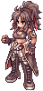
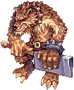
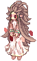
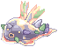

Episode 16.2: Terra Gloria¶
Terra Gloria, the relic used in the royal ritual, has been stolen. Nyhill and the Nerius sisters send you after the thief through Lighthalzen. The trail leads to Einbroch and Einbech, where you need the help of the secret Rebellion hideout, a raid on the Heart Hunter war base, and the Werner Laboratory to get it back.
Level: Base Level 100 or higher (inherited from Episode 16.1). Starts at: your guest room in Prontera Castle, Nyhill M. Heine (/navi prt_cas_q 21/39).
Before you start¶
| Requirement | Details |
|---|---|
| Episode 16.1 | You must have reached the "To the Past" stage of Episode 16.1, when Kronecker sends you to the Royal Library the second time (step 19 on that page). Before that, Nyhill does not react. |
| Party | Both story instances (Heart Hunter War Base and Werner Laboratory central room) must be created by a party leader. Do the story as the leader of your own party. |
| Inventory | Keep some free weight. Lazy in the Rebellion hideout needs at least 1,000 free weight before he talks to you. |
Episode Skip NPC
The custom Episode Skip NPC in Prontera (/navi prontera 164/163) can skip 16.1 and 16.2 together for one Episode 16 Clear Ticket #1000282 (3rd class only). It marks 16.2 as finished and gives 13 Schwarz's Honor Token #25155.
Story path¶
Chapter 1: The theft¶
- Enter your guest room (
/navi prt_cas_q 130/8from the guest-wing corridor). A scene plays. Talk to Nyhill M. Heine (/navi prt_cas_q 21/39). - Spica Nerius (
/navi prt_cas_q 23/36) in the same room. - Nyhill M. Heine again. The suspect, Bruno, is heading for Lighthalzen. Meet Crux and Skia at the Lighthalzen Airport. Quest: Secret Action.
- Crux at Lighthalzen Airport (
/navi lhz_airport 189/39). Search the north and northeast parts of Lighthalzen and regroup in front of the department store. Quest: Searching the suspect.
Chapter 2: Pursuit in Lighthalzen¶
- In Lighthalzen, walk to
/navi lighthalzen 186/293(north side). You spot the suspect. Quest: Pursuit! - Chase him east to the Man at
/navi lighthalzen 309/263and talk to him. The suspicious mercenary is caught. Quest: Arrest. - Return to your guest room in Prontera Castle and talk to Nyhill M. Heine (
/navi prt_cas_q 21/39). He asks you to meet Crux at the Juno Airport. Quest: Secret Action 2. - Crux at Juno Airport (
/navi y_airport 168/41). He flies you back to Lighthalzen Airport. Spica is waiting in the Lighthalzen hotel. Quest: Small differences between sightseeing and secret bussiness. - Go to the hotel room (
lhz_in02, around/navi lhz_in02 239/145) and talk to Philopontess (/navi lhz_in02 239/148). Spica hands the rest of the job to you: meet the agent "Lazy" at the Einbroch train station. Quest: Together with Rebel.
Chapter 3: Finding the Rebellion¶
- Unusual person in Einbroch (
/navi einbroch 239/269). Quest: To Einbech train station. - Lazy next to the small hole (
/navi einbroch 270/268). Then use the Very small hole (/navi einbroch 270/267) to reach Einbech. - Lazy in Einbech (
/navi einbech 46/208). Quest: Follow the trails. - Follow the trail to the collapsed person and talk to Lazy (
/navi einbech 76/131). Quest: Corner of Einbech. - Lazy at the corner of Einbech (
/navi einbech 217/82). He finds an entrance hidden in the wall by the beach. Quest: Invisible entrance. - Walk into the wall at
/navi einbech 215/84to enter the hideout (rebel_in). Talk to Lazy (/navi rebel_in 21/45). Quest: A glass of tea gratitude. - Lazy in the hideout's main hall (
/navi rebel_in 86/61). He asks you to win over four Rebellion leaders on the second floor. Quest: Gentleman on second floor, Ladies on second floor, Hunter on second floor, Est on second floor, Convince the leaders.
Chapter 4: Convince the leaders¶
There are two separate tasks. You can do them in any order.
A. The Hunter: Elena Volkova
- Elena Volkova (
/navi rebel_in 70/78). She only listens to someone who beats her. Accept the fight. Quest: Fighting is the language of warmonger, Fair and equitable result. - Talk to her again to go to the arena waiting room (
rebel_in, around 184/28). Join the waiting-room chat of Ivan Ivanov (/navi rebel_in 177/28). When it is your turn, you are moved into the arena and
Elena Bolkova #3630 spawns with 1,100,000 HP. Defeat her within 2 minutes. Sorita Doritas (/navi rebel_in 177/30) takes you out if you want to give up. - Talk to Elena Volkova again. She agrees to cooperate. You receive 200,000 Base / 200,000 Job EXP and 10 Schwarz's Honor Token #25155. Quest: Hunter on second floor is completed.
Priests
If your base job is Priest, Elena refuses to fight a cleric. Keep insisting through her dialogue and she approves without a fight. You receive 10 Schwarz's Honor Token #25155 but no EXP.
B. The Gentleman, the Ladies and Est
- Rebellion leader in the square (
/navi rebel_in 122/71). Tell him you saved Gonie and ask for cooperation. Quest: Doubt. - Rebellion guard at the ladies' room door (
/navi rebel_in 125/44). Say Rookie sent you and you are let in. - Walk up to Dien (
/navi rebel_in 164/88) and explain the situation. Then talk to her again. Quest: Ladies on second floor is completed. - Go to the commander's room (warp at
/navi rebel_in 88/80) and talk to the Special Force commander (/navi rebel_in 210/89). Quest: Est on second floor is completed. - Rebellion leader (
/navi rebel_in 122/71). - Rebellion Guard leader next to him (
/navi rebel_in 119/68). - Rebellion leader again.
- Dien in the square (
/navi rebel_in 121/69). - Rebellion leader once more. You receive 200,000 Base / 200,000 Job EXP and 10 Schwarz's Honor Token #25155. Quest: Gentleman on second floor is completed.
Report back
- Lazy (
/navi rebel_in 86/61). You receive 1,000,000 Base / 500,000 Job EXP and 10 Schwarz's Honor Token #25155. Quest: Between negotiation and deception. - Rebellion Squadder at the hideout exit (
/navi rebel_in 65/46). He can send you to Einbech. Quest: Next operation plan.
Chapter 5: The Blessing Star¶
- Go to the Einbroch inn (
ein_in01) and talk to Nyhill (/navi ein_in01 269/285). The target is the operation spot in the northern field of Einbroch. Quest: Find Star of Blessing! - In the Einbroch field (
ein_fild04), talk to Julian (/navi ein_fild04 281/337). As party leader, create Heart Hunter War Base. Enter through the Striker Unit Commander (/navi ein_fild04 275/342). Quest: Heart Hunter Base occupation. - Clear the base. Julian at the end gives you 10 Schwarz's Honor Token #25155 and sends you back to the field.
- Rookie (
/navi ein_fild04 284/332) takes you to the Werner Laboratory entrance (que_swat). Go down into the laboratory (warp at/navi que_swat 155/61). - Rookie inside the laboratory (
/navi slabw01 236/91). Talk once, then talk again as party leader to create the Werner Laboratory central room. Enter through the portal at/navi slabw01 246/88. - Clear the central room. At the end the party leader receives the Blessing Star #25179 and a Small Leather Bag #23087. Quest: Star of Blessing obtained.
- Bring the Blessing Star back to the Einbroch inn. Talk to Nyhill (
/navi ein_in01 269/285) or Philopontess (/navi ein_in01 269/282). The star is taken, and you are sent to Prontera. Quest: Let's return.
The Blessing Star goes to the party leader, whose quest moves on. If you lose it, talk to Rookie in the Werner Laboratory (/navi slabw01 236/91) for a new one.
- Skia Nerius in your guest room (
/navi prt_cas_q 18/37). You receive 500,000 Base / 500,000 Job EXP and 10 Honor Token #6919. She also tells you that Philopontess wants to see you at the Werner Laboratory entrance. - Philopontess at the Werner Laboratory entrance (
/navi que_swat 145/57). You receive 500,000 Base / 500,000 Job EXP and 10 Schwarz's Honor Token #25155. This completes Episode 16.2.
Rewards¶
| Step | Reward |
|---|---|
| 19. Elena Volkova | 200,000 Base / 200,000 Job EXP, 10 Schwarz's Honor Token #25155 |
| 28. Rebellion leader | 200,000 Base / 200,000 Job EXP, 10 Schwarz's Honor Token #25155 |
| 29. Lazy | 1,000,000 Base / 500,000 Job EXP, 10 Schwarz's Honor Token #25155 |
| 33. Heart Hunter War Base | 10 Schwarz's Honor Token #25155 |
| 36. Werner central room | Blessing Star #25179 (quest item) and Small Leather Bag #23087 |
| 38. Skia Nerius | 500,000 Base / 500,000 Job EXP, 10 Honor Token #6919 |
| 39. Philopontess | 500,000 Base / 500,000 Job EXP, 10 Schwarz's Honor Token #25155 |
| Total | 2,400,000 Base / 1,900,000 Job EXP, 50 Schwarz's Honor Tokens, 10 Honor Tokens |
The Rebellion members tell you to take your Schwarz's Honor Token #25155 to Strasse (/navi rebel_in 74/67). He trades them for Agenda Robe [1] #15163 or Consultation Robe [1] #15164 (1,000 each), Costume Combat Vestige #20456, Mercenary Ring Type A #28425 or Mercenary Ring Type B #28426 (1,500 each), and Republic Hat [1] #19115 (2,500).
Finishing the story unlocks:
- Repeat runs of the Heart Hunter War Base (the second version, from Julian, once a day; the cooldown resets at 04:00 server time).
- Repeat runs of the Werner Laboratory central room from Rookie inside the lab (
/navi slabw01 236/91), while you hold Rookie's Sweeping the remnants daily (see below). - Episode 17.1 (Illusion), which starts in your guest room.
After the story¶
- Rookie (
/navi que_swat 150/58), Sweeping the remnants: defeat
Pet Child #3621 in the central room. Reward: 200,000 Base / 200,000 Job EXP and 3 Schwarz's Honor Token #25155, then a daily cooldown that resets at 04:00 server time. - Philopontess (
/navi que_swat 145/57), Hiding Researcher: find the researcher hiding in one of the cabinets in the laboratory (slabw01). Reward: 200,000 Base / 200,000 Job EXP and 3 Schwarz's Honor Token #25155, then a daily cooldown that resets at 04:00 server time. - Yuslan (
/navi que_swat 161/53), Make Chimeras rest in peace: defeat 10
Human Kimera #3631 and 10
Material Kimera #3632. Reward: 300,000 Base / 300,000 Job EXP and 3 Schwarz's Honor Token #25155, then a daily cooldown that resets at 04:00 server time. - Elena Volkova offers a repeatable arena fight. The Rebellion ladies (Dien, Ridsh, Cotnes) have their own small requests. Arinoa and Arivero Yurhik (
/navi rebel_in 82/68) start a longer side quest across Einbech, Lighthalzen, Juno and Einbroch that ends with 1,000,000 Base / 4,000,000 Job EXP and 10 Schwarz's Honor Token #25155.